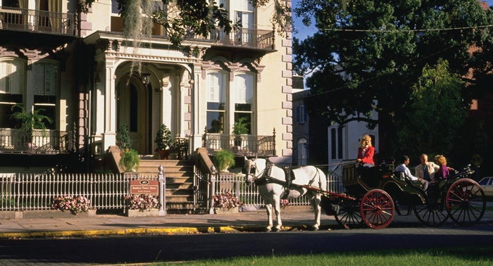
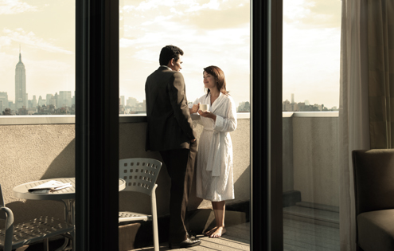

石山州立公园是每个来亚特兰大的游客必到之地，公园占地面积达3200英亩，其中最知名的便是高825英尺、面积583英亩的圆顶形花岗石山。翻越这块世界上最大的裸露花岗岩，俯瞰山下，城市全景尽收眼底。此外，空中缆车、历史纪念馆、古玩博物馆、高尔夫球场、旱冰场、音乐中心、露天剧场等娱乐设施场所应有尽有。

萨凡纳是美国最适合步行的城市，是一座活着的博物馆，是全美最大的国家历史地标区：占地2.5平方英里的街区中有超过2,300个具历史意义的殖民地时期和维多利亚风格的老宅和建筑物——它们中的大多数都被仔细地修缮过。乘坐马车、电车、公交车或者骑自行车，您都可以很好得参观整个街区。这座花园城市也是伊斯特伍德《午夜善恶花园》和奥斯卡获奖影片《阿甘正传》的拍摄地。整座城市由20多个被称为“广场”的小花园组成，漫步其中别有一番风情。
占地5,700亩的哲基尔岛是佐治亚州所有沙岛中最小的一个。哲基尔岛的美如诗如画，像木兰一样生长的橡树林是哲基尔岛的苍穹，郁郁葱葱的蒲葵林和漫地而铺的冬青叶栎是哲基尔岛的地毯。哲基尔岛上亦有一些十九世纪末二十世纪初的历史建筑，1910年美国最重要的银行家们曾在这里策划筹备美联储。岛上的野生物种也非常丰富，不同的哺乳动物，爬行动物和鸟类都在这里和谐生活，兴旺繁衍。
当一条古老的河流静静流淌过一座现代城市，能和我一起想想爱上条河流的理由吗？独自漫步在自然的怀抱里；或者和知心好友一起悠闲地划着木筏，懒洋洋地穿过浅滩沙石；太阳升起后在神秘的水域垂钓；抑或在一个阳光明媚的星期天下午和家人来个野餐。来查塔胡奇河国家游乐区进行户外活动，会让您觉得以前好像从未户外活动过一样。
阿帕拉契小径是美国最受欢迎的山道，每年大约有三四百万游客来这里体验远足。游客中大约五六百名“驴友”完成了全部2,175英里（约3,500千米）的行程——从佐治亚的斯普林吉尔山，到缅因州的卡塔顶山，途中有大约500万层台阶，经过14个州，8处国家森林和6座国家公园。
阿森斯位于蓝脊山脉的山麓下，是一座充满活力的大学城，这里曾是佐治亚州战前路线的北大门。南北战争时期，为躲避谢尔曼将军下达的对佐治亚州焚城三月政策，南方大批逃亡的军民从七个北方军团中逃出生天，这条长达100英里的撤退路线被称之为战前路线。不论由向导带领的游客还是自由行的游客，来到阿森斯，大家都会去参观16个历史街区，还有4家能够一睹南方联盟主要领导人生平的博物馆。对于阿森斯来说，维多利亚时代广场的重要性一如既往，不论是战前，还是战后重建。在维多利亚时代广场，特色的电子音乐混音餐厅，小商铺，还有那些孕育了世界顶级乐队的音乐俱乐部，都值得前去一看究竟。
英国建筑师威廉姆•杰伊，引进英国摄政时期的建筑风格和工艺，设计了萨凡纳这个城市里大部分有名的建筑。他最好的设计作品当属于1816年到1819年兴建的欧文斯-托马斯博物馆。比起这个区其他的建筑，该博物馆当之无愧地赢得更多赞誉和惊叹。房子的内部用希腊风格的线条来装饰，砌着半月拱门，装有变色玻璃板，摆放着优雅精美的邓肯•法福式家具。
作为黄金岛上最大的沙岛，圣西蒙斯岛因著名诗人西德尼•拉尼尔那句“圣西蒙斯岛横亘在永生格林沼泽中间”而闻名于世。在西德尼•拉尼尔的“福克纳故事”中，勾勒这样一幅完美的画面：布满青苔的橡树生机盎然伫立在岛上每一条街道上。“圣西蒙斯岛”为游客而开的商铺独特而充满魅力，美食方面从精致的正餐到休闲小吃供应俱全。当地居民和游客都热衷于一些降温运动——游泳或者钓鱼什么的。当地的海王星公园和欢乐园正好能提供这样的场所，那里有一个公共游泳池，一个迷你高尔夫球场，还有个渔船码头。
达文波特故居博物馆是一座庄严的联邦风格建筑。它由木艺大师以赛亚达文波特为他的家人而建造。借此建筑，游客可以窥见萨凡纳这一港口城市在17世纪20年代的国内生活。上等的内墙抹灰，复兴时期风格的房屋，壮观的楼梯，是这座公寓博物馆的参观亮点。该馆的近期修缮还赢得了保护区美国总统奖。
佛罗里达
佐治亚州
路易斯安那
马萨诸塞州
俄勒冈州
华盛顿特区
佐治亚州是密西西比河以东最大的州，面积广大，拥有多样的天然地貌。北部有蓝岭山脉高耸入云，河流依山奔腾而下，南部是森林密布的平原，东南角还有美国境内最大的淡水沼泽之一。从山峦到海岸，从其南部河流到热情友好的大都市亚特兰大，保证每一位访客都获得一个难忘的经历。
查 看 官 网>>
Stone Mountain Park
石山公园
石山州立公园是每个来亚特兰大的游客必到之地，公园占地面积达3200英亩，其中最知名的便是高825英尺、面积583英亩的圆顶形花岗石山。俯瞰山下，城市全景尽收眼底。
Savannah Hist Dist
萨凡纳历史街区
萨凡纳是美国最适合步行的城市，是一座活着的博物馆，是全美最大的国家历史地标区：占地2.5平方英里的街区中有超过2,300个具历史意义的殖民地时期和维多利亚风格的老宅和建筑物。
Ekyll Island
哲基尔岛
占地5,700亩的哲基尔岛是佐治亚州所有沙岛中最小的一个。美如诗如画哲基尔岛上亦有一些十九世纪末二十世纪初的历史建筑，1910年美国最重要的银行家们曾在这里策划筹备美联储。
Chattahoochee River National Recreation Area
查特胡奇河国家游乐区
来查塔胡奇河国家游乐区进行户外活动，独自漫步在自然的怀抱里；或者和知心好友一起悠闲地划着木筏，会让您爱上条河流。
The Appalachian Trail
阿帕拉契小径
阿帕拉契小径是美国最受欢迎的山道，每年大约有三四百万游客来这里体验远足。游客中大约五六百名“驴友”完成了全部2,175英里（约3,500千米）的行程。
Athens
阿森斯
阿森斯位于蓝脊山脉的山麓下，是一座充满活力的大学城，来到阿森斯，大家都会去参观16个历史街区，还有4家能够一睹南方联盟主要领导人生平的博物馆。
Owens-Thomas House
欧文斯-托马斯博物馆
英国建筑师威廉姆•杰伊，设计了萨凡纳这个城市里大部分有名的建筑，包括欧文斯-托马斯博物馆。该博物馆当之无愧地赢得更多赞誉和惊叹。
St Simons Island
圣西蒙斯岛
作为黄金岛上最大的沙岛，“圣西蒙斯岛”为游客而开的商铺独特而充满魅力，美食方面从精致的正餐到休闲小吃供应俱全。当地居民和游客都热衷于一些降温运动——游泳或者钓鱼什么的。
Davenport House Museum
达文波特故居博物馆
达文波特故居博物馆是一座庄严的联邦风格建筑。它由木艺大师以赛亚达文波特为他的家人而建造。借此建筑，游客可以窥见萨凡纳这一港口城市在17世纪20年代的国内生活。
希尔顿全球酒店有着95年的历史，是备受世界尊敬的品牌。希尔顿全球酒店的“欢迎”项目，热情欢迎中国旅客，前台团队的成员能够说流利的中文，酒店提供传统中餐早餐以及宾至如归的服务。希尔顿全球在美国有3500家酒店，适合各种风格及场合，更有不同特色的子品牌酒店，给游客们一个梦寐以求的悠闲假日，领略万千世界。
查 看 官 网>>
